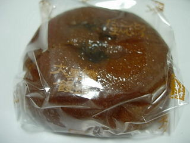
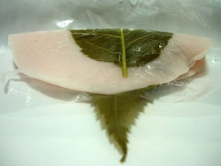
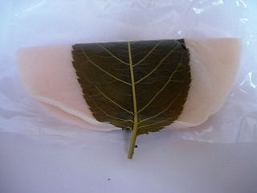
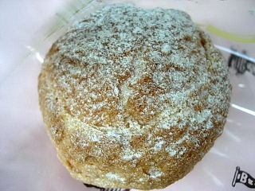
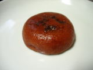

やまさきやの大黒糖饅頭
2009/09/29
薄い黒糖味の皮の中には、沢山の餡がはいってました。

砂糖がしっかり入ってて、甘い粒餡ですね。食べ応えがありました。
お茶がとっても欲しくなりました。
島根県出雲市大津町473-1
2009/09/29
薄い黒糖味の皮の中には、沢山の餡がはいってました。

砂糖がしっかり入ってて、甘い粒餡ですね。食べ応えがありました。
お茶がとっても欲しくなりました。
2009/02/12
衣が大きいせいか、桜餅のいい香りがよくしました。

衣に対して餡がわりと少なめなのと、粒餡でそんなに甘くないので、軽めですね。
去年も食べてるんですが、なんとなく味が変わった気がしました。
2008/3/10
ちょっともちもちっとした生地の桜餅でした。

つぶ餡入りのさくら餅で、豆の味がよくわかる味付けでした。豆の素材の味がするのってちょっと素朴な感じがしていいですね。

シュークリームも買ったんですが、柔らかくてミルク味が強いくて甘いクリームが印象に残りました
2007/12/23
餡子のいっぱい入ったお饅頭です。
つぶアンで、豆の味がするタイプのものでした。和菓子でよくある「小倉」の豆味がいっぱい味わえる感じでした。

そのまま食べたんですが、温めて食べたら大判焼きっぽくて美味しかったかも？って思いました。
2006/1/11
今年もさくら餅の季節がやってきましたね。第一弾はやまさきやさんでした。
ちょっとしっとりした衣の中に、クラッシュした粒餡が入ってました。
クラッシュした粒餡が素朴な感じで、餡餅っぽかったです。
2005/6/14
出雲市大津町の、「やまさきや」のカステラをもらいました。
大きいカステラなので、明日も明後日もこれを食べてると思います。
カステラって１本が大きいので、今回みたいに明日も明後日もって続けて食べる事が多いですが、私は飽きないですね。あんまり癖がないからでしょうか？
とは言っても、ハーフサイズの商品があったらうれしいですけど。
１本単位だと大きいので、自力で買って食べようとはなかなか思えないです。
このカステラの感想ですが、卵白の味がわかってカステラらしい味でした。
2005/5/22
出雲市大津町のやまさきやのくるみ餅をまた貰いました。
四角いお餅の中にくるみが入ってて、そのまわりにキナコがかかってます。
ちょっと変わったお菓子ですよね。
2005/5/20
出雲市大津町のやまさきやさんのお饅頭を頂きました。
ちょっと甘さが強めの栗饅頭だったんですけど、この「猫に小判くり」って名前は何なんでしょう?私には意味が分かりません。
なんなんだかな～って感じで面白くていいんですけど。
あと、お饅頭のパッケージに漫画っぽい猫の絵が書いてあるのも普通の和菓子ぽくなくて面白かったです。
名前やパッケージに遊びがあるのもいいもんですね。